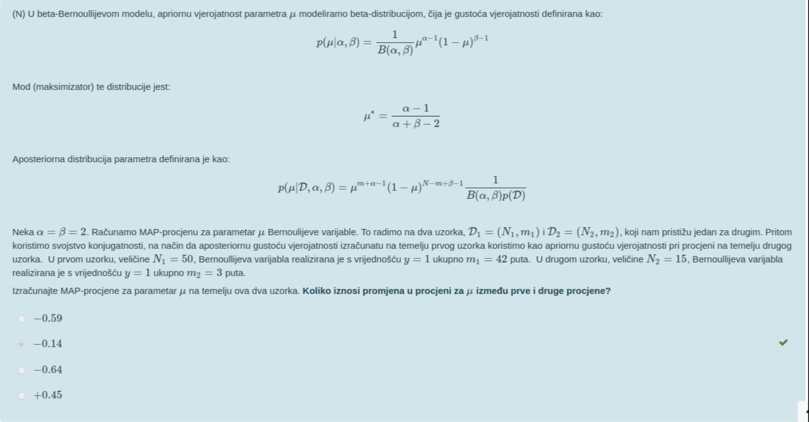 kako se racuna ovaj zadatak? kako racunamo beta fju?
enaiks taj je rješen ovdje https://docs.google.com/document/d/15drigevvwo3wOvZ3uFZgCAO2hgEHdCUa-a1DTMWV7_k/edit
Stark … sto je doslovno to sto to znaci.
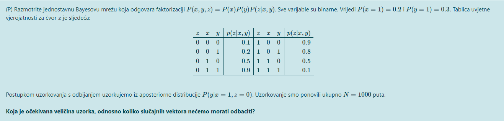 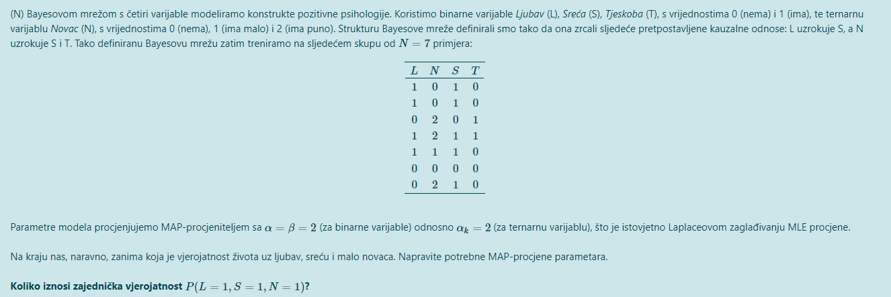
Jel zna netko kako se ova dva zadatka rjesavaju?
bearyn 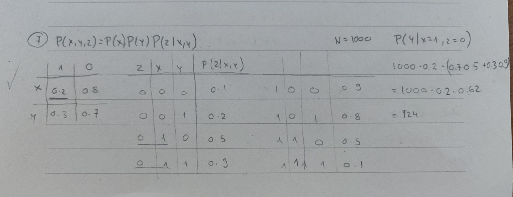 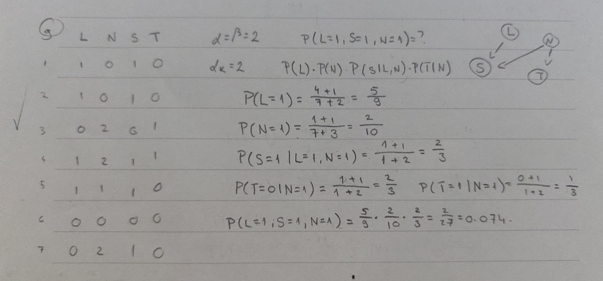 Javi ako ti nije jasan postupak
zaba Samo jedno pitanje za ovaj s L, S, N, T. Kad se racuna p(S=1|L=1, N=1), u nazivniku N predstavlja ukupan broj primjera za koje je L=1 i N=1? Da je npr bio jos jedan primjer recimo L=1, N=1, S=0, T=0, onda bi taj N u nazivniku bio jednak 2?
zaba Čemu služiju izračuni P(T=0 | N=1) i P(T=1 | N=1)?
zaba mozes objasniti u ovom xyz yadatku, kako si dosao do te formule?
zaba U ovom zadatku gdje se radi MAP procjena parametara zašto se, kada se računa P(N) i P(L), u nazivniku za Nkj uzima 7? Oba dvije varijable nemaju roditelje (uvjetovane varijable) i zar nije onda Nkj=0?
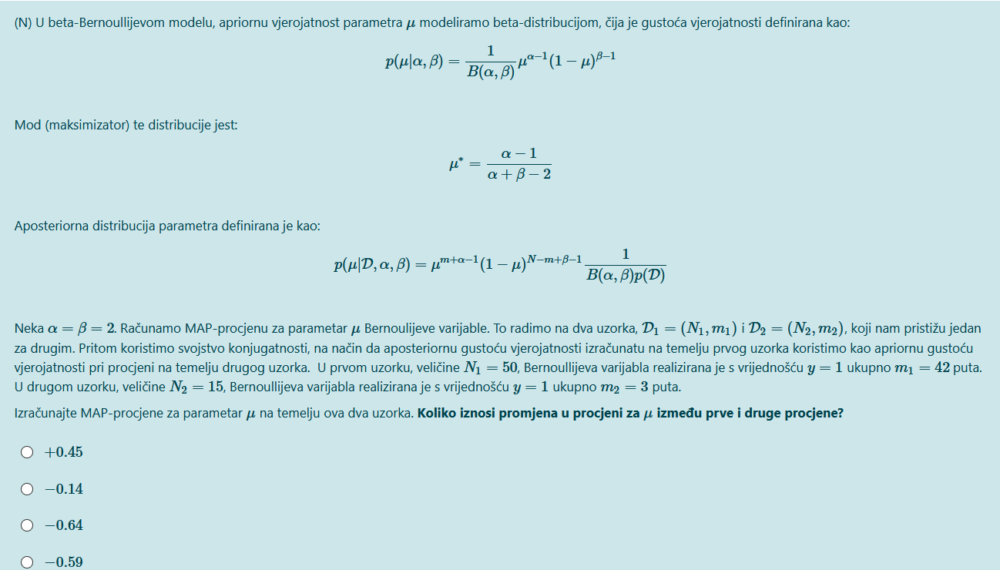 kako se rješava ovaj zadatak?
Zabe u onom zajednickom dokumentu imas taj zadatak rijesen
bearyn da, tocno to
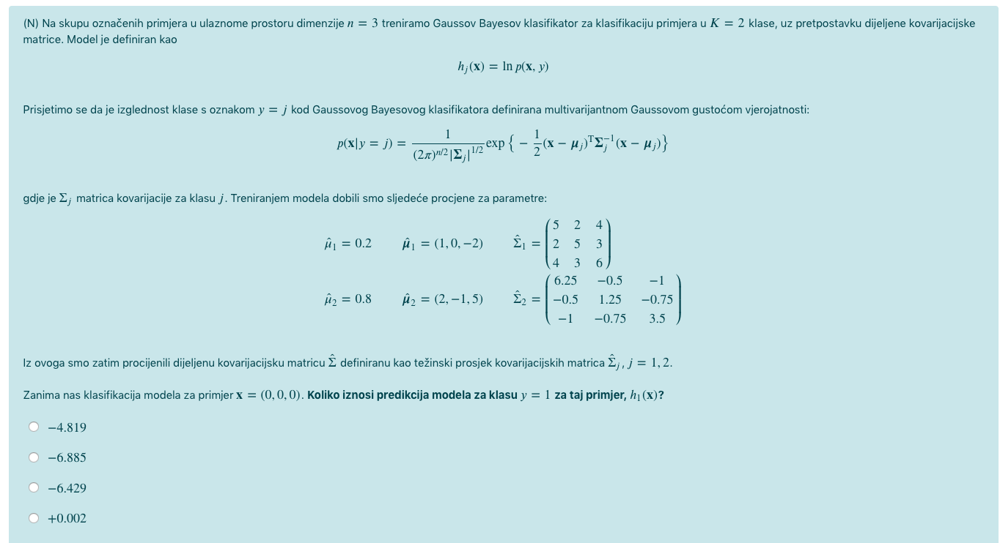 Kako se ovo rješava, odnosno što se uvrštava za mi kod izračuna p(x|y=1)?
ygerg11 da izracunas zajednicku vjerojatnost (koja u sebi ima P(T|N)), ali u ovom slucaju je njihov zbroj jednak 1 pa nisu ni bitni
zaba aha to sam i mislio, hvala 😊
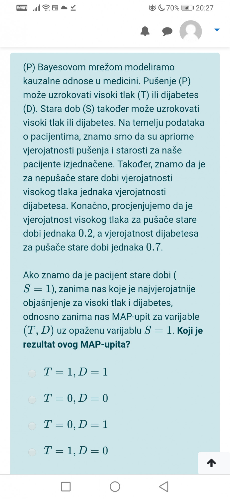
Zna netko riješiti? Svi su mi OK, ali s ovim se mucim već par sati.
Hvala!
pushPop Zna netko ovaj? U zajedničkom dokumentu ga je riješila kolegica, ali nije sigurno da je dobar postupak.
Ima li netko rijesen zadatak sa cloudy/rainy/sprinkler/wet?
Murin Pitaj u dokumentu, bit će preglednije a i prof će komentirati
Murin 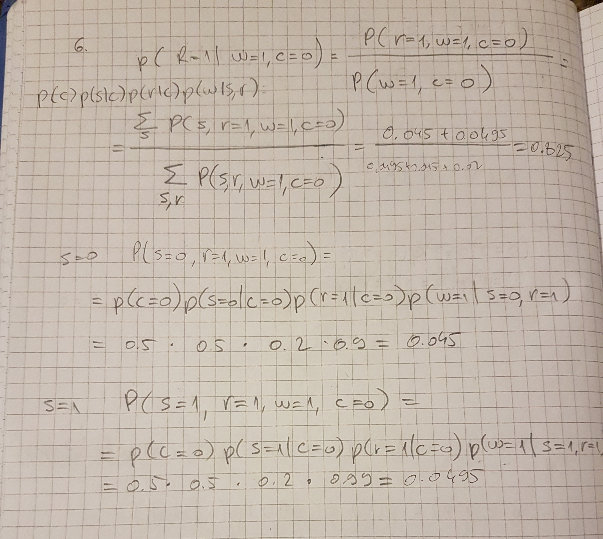 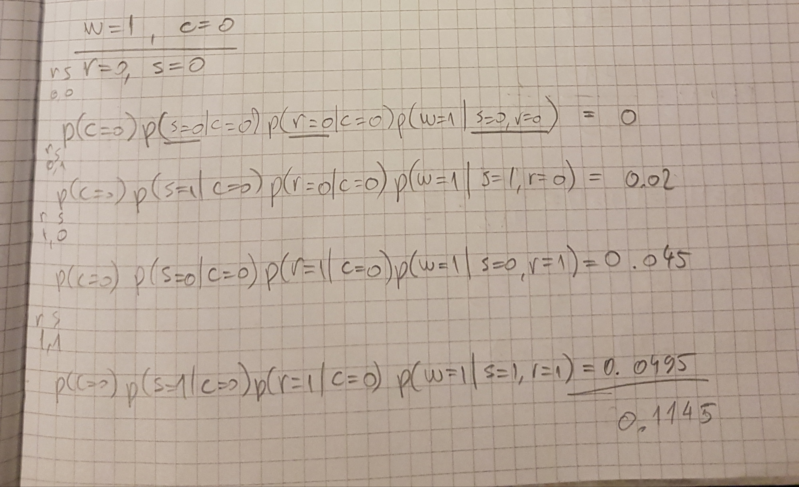 Na drugoj slici je donji dio razlomka
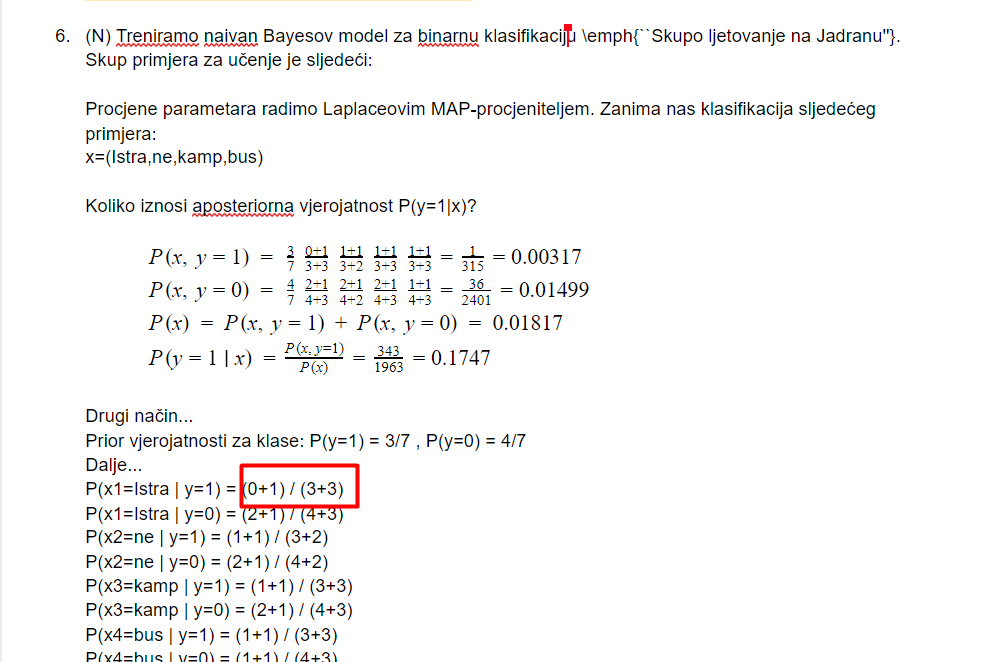 kako se dobiju ove vrijednosti? moze netko objansiti?
enaiks Nazivnik… gledaš u tablici sve retke di je y=1, a x1=Istra. Takvih redaka je 0. Dodaš 1 zbog Laplaceovog zaglađivanja. Brojnik… ukupno imaš 3 retka s y=1. Još dodaš 3 jer imamo 3 vrijednosti za x1, ovo isto radiš zbog Laplaceovog zaglađivanja.
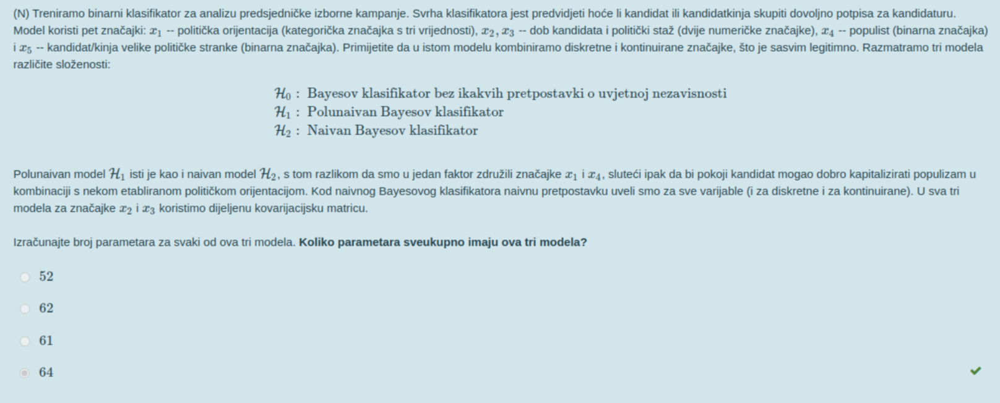 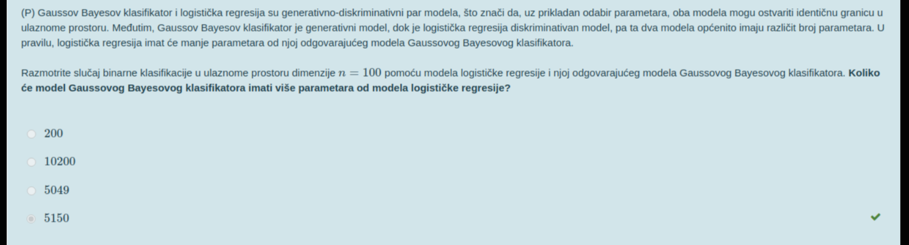
ima netko formule za ove zadatake?
enaiks broj parametara kod logisticke regresije se ne mijenja kada broj klasa raste? recimo da imamo 5 klasa umjesto 2, opet bi br parametara ostao n+1?
enaiks za ovaj drugi zadatak, broj parametara LR je n+1, a broj parametara Gauss Bayesa je n*(n+1)/2 + 2n + 1. Kad ubacis i oduzmes (jer te trazi koliko ovaj drugi ima vise param od prvog) dobijes 5150